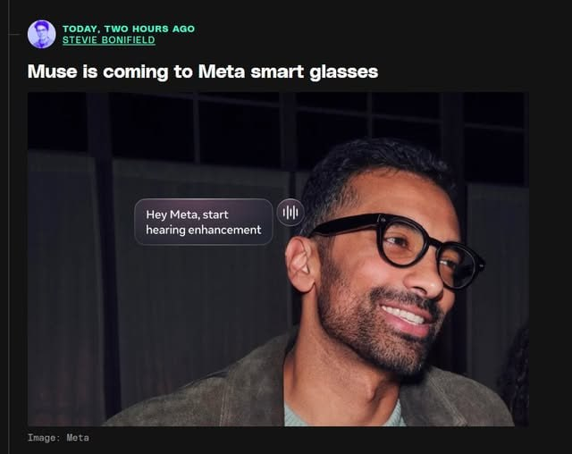

過去 26 小時共 4 則：2 則是 EP699 集數推播與業配，實質內容只有一組，是對 Meta Connect 2026 新硬體的點評。（今天 GitHub 排程漏跑，本次抓取是 16:16 手動補跑，所以信比平常晚到。）
原文 #6440
- meta vr glasses, 100g, 2.5k 解析度, 3 小時續航, 1299 USD
- ray ban meta audio, 無相機眼鏡，主攻音訊通話和 AI
- ray ban meta gen3, 既有的加強版，導入更多 AI 助理場景
把產品弄得更廣來服務更多人群，輕量化和續航是這個比誰砲管大的時代容易被忽略的核心體驗，真正決定你可不可以一直用的關鍵在這裡
把 muse 變成核心服務層，全力追求硬體的滲透。這也說明為什麼蘋果在 AI 鳥鳥的資本市場還是很愛，看明白了掌握入口才是硬道理
https://www.theverge.com/tech/998480/meta-connect-2026-biggest-news-announcements
原文 #6441（無文字，僅圖片）

The Verge 報導截圖，標題是「Muse is coming to Meta smart glasses」。照片裡一位戴 Meta 眼鏡的男性，對話框寫著「Hey Meta, start hearing enhancement」（開啟聽力增強）。
講解
Meta Connect 是 Meta 每年秋天的硬體與 AI 發表會，今年 9/23 舉行，重點是三條眼鏡產品線。Meta VR Glasses 是做成眼鏡外型的 VR 裝置，約 100 克，只有 Quest 3 頭盔的五分之一。它能這麼輕，是因為處理器（Qualcomm Snapdragon Reality Elite）、電池和儲存都移到一顆用線連著的「puck」（口袋大小的運算盒）裡，臉上只留顯示器和鏡片。售價 1,299 美元，要到明年春天才出貨。官方說法是「最長 3 小時連續高解析影片播放」，這個數字是影片播放情境，不是一般使用續航。
貼文和原始來源有一處對不上：貼文寫「2.5k 解析度」，Engadget 寫的是「5K 顯示」。可能一邊講單眼、一邊講雙眼合計，但我查到的報導沒有給出單眼規格，無法確認，建議以官方規格頁為準。
Ray-Ban Meta Audio 是 Meta 第一副沒有相機的智慧眼鏡：43 克、續航 12 小時，充電盒可再提供 48 小時，349 美元起，10/13 出貨。拿掉相機一方面省重量、省電，另一方面也是回應外界對「隨身偷拍眼鏡」的隱私疑慮，Engadget 就直接點出這層背景。Ray-Ban Meta Gen 3 是現有主力款的改版：續航從 8 小時提升到 9 小時，六麥克風陣列號稱能濾掉九成以上背景噪音，449 美元起，即日開賣。
截圖講的是另外兩件事。第一是 Muse：這是 Meta 的 AI 代理（agent，能替你執行多步驟任務的 AI，不只是一問一答），將導入眼鏡。發表會最後 Zuckerberg 還秀了一個鑰匙圈大小的 Muse Charm，但價格、規格都還沒公布。第二是聽力增強：功能取得 FDA 許可，定位是給聽力大致正常、但在吵雜環境聽不清楚的人，不是取代助聽器。試用 30 天後收一次性 149 美元（Meta One 訂閱內含），美國年底先上線，Gen 3 和 Audio 款之後才支援。
作者的論點是：在大家比誰的模型大、算力多（「比誰砲管大」）的時代，重量和續航這種體驗面才決定使用者能不能整天戴著用。Meta 的策略是把產品線拉寬來覆蓋不同族群，再用 Muse 當所有硬體共用的服務層。這和「掌握入口」的邏輯一致：誰擁有使用者每天接觸 AI 的那個裝置，誰就握有分發權與資料。作者也用這點解釋，為何蘋果在 AI 模型上不算領先，資本市場仍然買單。
要補充的是，這是作者的推論，不是 Meta 的說法。目前最有「入口」意義的 VR Glasses 還要半年才上市，Muse 上眼鏡、Muse Charm 也都只有預告、沒有時程或價格。硬體滲透率能否真的起來，還要看出貨後的實際銷量與使用黏著度。
集數推播／業配
#6438 2026-09-23 16:02 台北：EP699 集數推播，附 Saily eSIM 業配優惠碼。
#6439 2026-09-23 16:02 台北：與 #6438 同分鐘的純圖片，視為同一則業配視覺稿。
貼文清單
來源